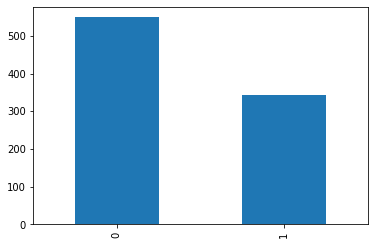

from fastai2.tabular.all import *
titanic = pd.read_csv('https://raw.githubusercontent.com/mwaskom/seaborn-data/master/titanic.csv')Currently using fastai2.
Installation via pip install fastai2.
Oversampling
cat_vars = ['survived', 'pclass', 'sex', 'embarked', 'class', 'who', 'adult_male', 'deck', 'embark_town', 'alone']
cont_vars = ['age', 'sibsp', 'parch', 'fare']
dep_var = 'alive'
procs = [Categorify, FillMissing, Normalize]
block_y = CategoryBlock()
splits = RandomSplitter()(range_of(titanic))to = TabularPandas(titanic, procs=procs, cat_names=cat_vars, cont_names=cont_vars,
y_names=dep_var, block_y=block_y, splits=splits)to.items| survived | pclass | sex | age | sibsp | parch | fare | embarked | class | who | adult_male | deck | embark_town | alive | alone | age_na | sibsp_na | parch_na | fare_na | |
|---|---|---|---|---|---|---|---|---|---|---|---|---|---|---|---|---|---|---|---|
| 143 | 1 | 3 | 2 | -0.799442 | -0.464437 | -0.467832 | -0.509204 | 2 | 3 | 2 | 2 | 0 | 2 | 0 | 2 | 1 | 1 | 1 | 1 |
| 376 | 2 | 3 | 1 | -0.568123 | -0.464437 | -0.467832 | -0.498856 | 3 | 3 | 3 | 1 | 0 | 3 | 1 | 2 | 1 | 1 | 1 | 1 |
| 853 | 2 | 1 | 1 | -1.030761 | -0.464437 | 0.815107 | 0.166542 | 3 | 1 | 3 | 1 | 4 | 3 | 1 | 1 | 1 | 1 | 1 | 1 |
| 333 | 1 | 3 | 2 | -1.030761 | 1.242489 | -0.467832 | -0.276367 | 3 | 3 | 2 | 2 | 0 | 3 | 0 | 1 | 1 | 1 | 1 | 1 |
| 791 | 1 | 2 | 2 | -1.030761 | -0.464437 | -0.467832 | -0.110793 | 3 | 2 | 2 | 2 | 0 | 3 | 0 | 2 | 1 | 1 | 1 | 1 |
| ... | ... | ... | ... | ... | ... | ... | ... | ... | ... | ... | ... | ... | ... | ... | ... | ... | ... | ... | ... |
| 206 | 1 | 3 | 2 | 0.202940 | 0.389026 | -0.467832 | -0.320865 | 3 | 3 | 2 | 2 | 0 | 3 | 0 | 1 | 1 | 1 | 1 | 1 |
| 654 | 1 | 3 | 1 | -0.876548 | -0.464437 | -0.467832 | -0.509204 | 2 | 3 | 3 | 1 | 0 | 2 | 0 | 2 | 1 | 1 | 1 | 1 |
| 802 | 2 | 1 | 2 | -1.416293 | 0.389026 | 2.098045 | 1.834694 | 3 | 1 | 1 | 1 | 2 | 3 | 1 | 1 | 1 | 1 | 1 | 1 |
| 257 | 2 | 1 | 1 | 0.048727 | -0.464437 | -0.467832 | 1.141355 | 3 | 1 | 3 | 1 | 2 | 3 | 1 | 2 | 1 | 1 | 1 | 1 |
| 41 | 1 | 2 | 1 | -0.182592 | 0.389026 | -0.467832 | -0.214277 | 3 | 2 | 3 | 1 | 0 | 3 | 0 | 1 | 1 | 1 | 1 | 1 |
891 rows × 19 columns
to.items.alive.value_counts().plot.bar();
dls = to.dataloaders()learn = tabular_learner(dls, [200,100], metrics=accuracy)The get_idxs method of DataLoaders samples the idxs to be used in an epoch of training:
learn.dls.get_idxs()[:10][412, 122, 391, 38, 310, 400, 316, 320, 57, 500]len(learn.dls.get_idxs())700df = pd.DataFrame(1 / learn.dls.items.alive.value_counts())weights = learn.dls.items.alive.apply(lambda x: df.to_dict()['alive'][x])learn.dls.train.items.sample(n=700, weights=weights, replace=True).alive.value_counts()0 352
1 348
Name: alive, dtype: int64def sample_epoch(self):
df = pd.DataFrame(1 / self.items.alive.value_counts())
weights = self.items.alive.apply(lambda x: df.to_dict()['alive'][x])
self.n = 700 # going for bigger epochs as this will require quite a bit of training
oversampled_idxs = self.items.sample(n=self.n, weights=weights, replace=True).index
return [np.where(self.items.index == i)[0][0] for i in oversampled_idxs]learn.dls.train.get_idxs = types.MethodType(sample_epoch, learn.dls.train)idxs = learn.dls.train.get_idxs()
learn.dls.train.items.iloc[idxs].alive.value_counts()1 360
0 340
Name: alive, dtype: int64learn.fit(10, 1e-3)| epoch | train_loss | valid_loss | accuracy | time |
|---|---|---|---|---|
| 0 | 0.401528 | 0.673750 | 0.657303 | 00:00 |
| 1 | 0.231258 | 0.608156 | 0.792135 | 00:00 |
| 2 | 0.144609 | 0.453062 | 0.955056 | 00:00 |
| 3 | 0.098268 | 0.222973 | 1.000000 | 00:00 |
| 4 | 0.070314 | 0.066305 | 1.000000 | 00:00 |
| 5 | 0.052205 | 0.014175 | 1.000000 | 00:00 |
| 6 | 0.039717 | 0.002960 | 1.000000 | 00:00 |
| 7 | 0.030711 | 0.000851 | 1.000000 | 00:00 |
| 8 | 0.024077 | 0.000408 | 1.000000 | 00:00 |
| 9 | 0.019053 | 0.000268 | 1.000000 | 00:00 |
learn = tabular_learner(dls, [200,100], metrics=accuracy)learn.fit(10, 1e-3)| epoch | train_loss | valid_loss | accuracy | time |
|---|---|---|---|---|
| 0 | 0.328865 | 0.669253 | 0.775281 | 00:00 |
| 1 | 0.180982 | 0.614954 | 0.943820 | 00:00 |
| 2 | 0.110680 | 0.484824 | 0.977528 | 00:00 |
| 3 | 0.074929 | 0.271870 | 1.000000 | 00:00 |
| 4 | 0.053904 | 0.095419 | 1.000000 | 00:00 |
| 5 | 0.040015 | 0.020298 | 1.000000 | 00:00 |
| 6 | 0.030432 | 0.003644 | 1.000000 | 00:00 |
| 7 | 0.023582 | 0.000864 | 1.000000 | 00:00 |
| 8 | 0.018468 | 0.000273 | 1.000000 | 00:00 |
| 9 | 0.014615 | 0.000178 | 1.000000 | 00:00 |